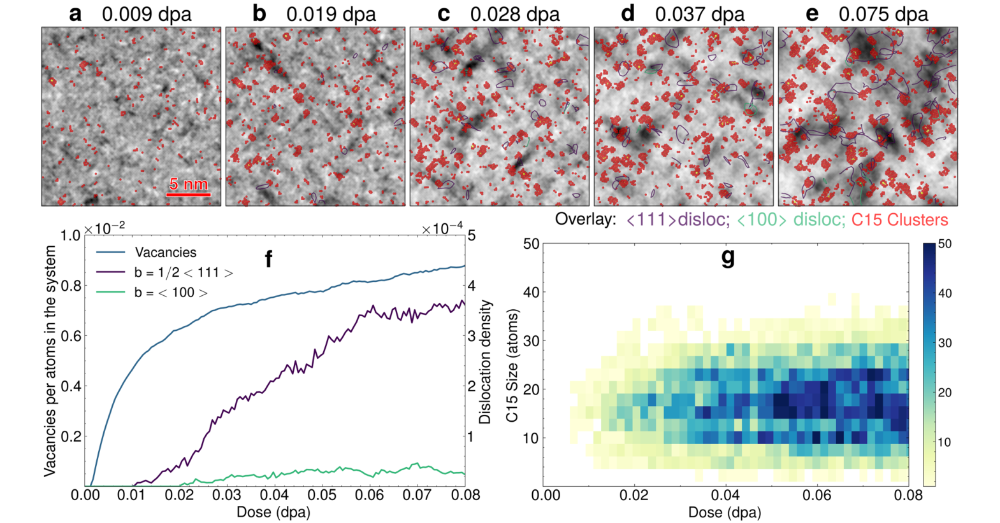
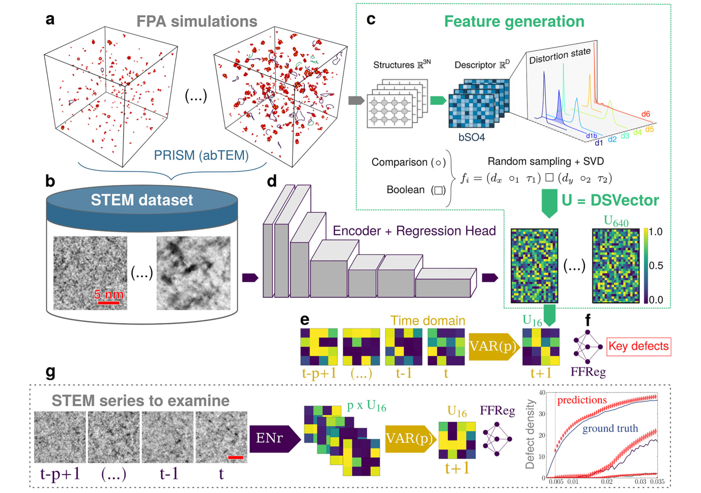
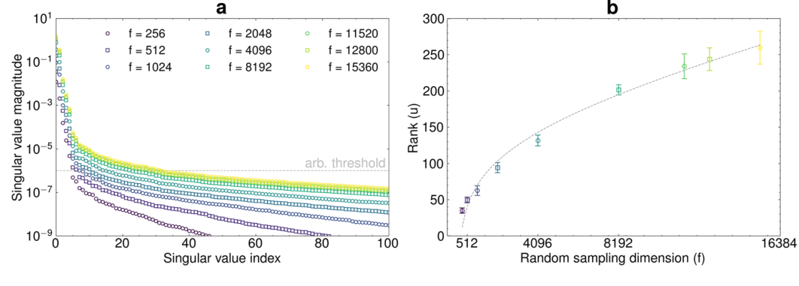
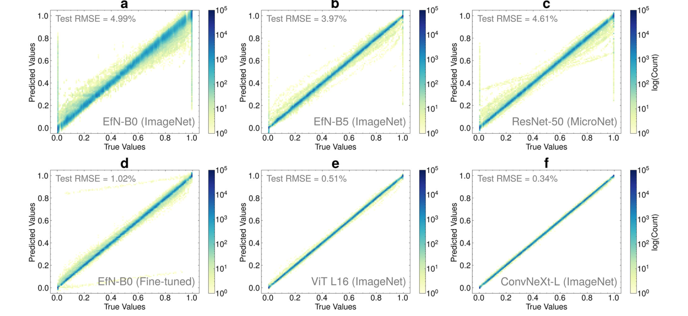
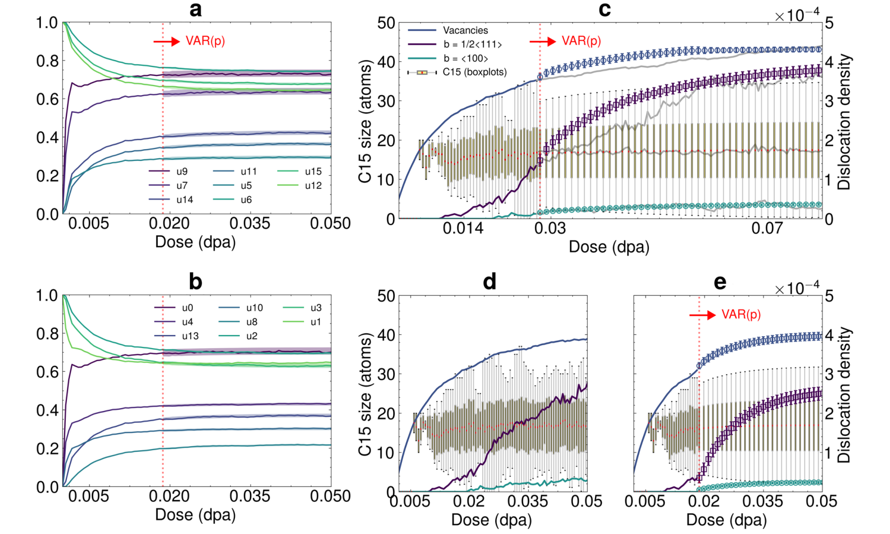
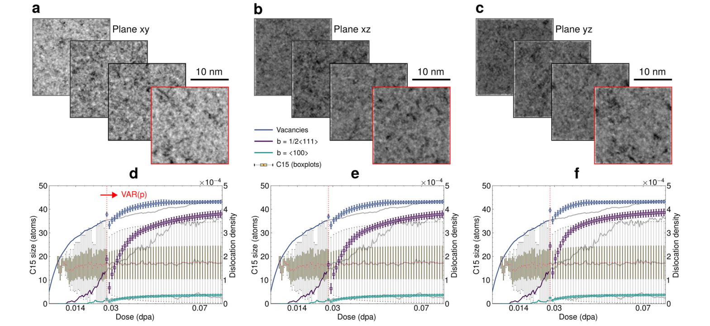

Distortion states：用共同的畸变状态连接原子模拟与电镜损伤预测
论文原文 ↗论文：Distortion states as robust embeddings for quantifying and forecasting atomistic damage from electron microscopy
作者：Camilo A. F. Salvador、Clovis Lapointe、Thomas Bilyk、Maxime Filimonov、Estelle Meslin、Mihai-Cosmin Marinica；Université Paris-Saclay、CEA
来源：npj Computational Materials，2026-11-03；官方页面 ·
电镜里不显眼的原子团簇，怎样进入损伤描述
辐照使金属里的原子离开晶格位置，产生空位和间隙原子。这些缺陷随后聚集、转化，形成团簇或位错环，影响材料性能。传统电镜分析常先识别图像中清楚可见的缺陷，再统计数量和大小；原子模拟则知道每个原子的位置，可以直接计算局域结构。两种信息各有所长，但没有天然共用的描述方式。
论文选择体心立方铁作为例子。辐照初期，间隙原子可形成带有 C15 Laves 相局域排列的纳米团簇，之后与位错环的形成相联系。C15 团簇和周围铁的组成相同，尺寸小、应变场弱，在明场扫描透射电镜（STEM）中往往没有明显轮廓。如果只数清楚的黑点，就容易漏掉它们。
作者提出先用原子模拟构造一个连续的畸变状态向量（distortion state vector，DSV），描述整块材料中局域结构偏离各种参考环境的分布，再训练图像模型从对应的合成 STEM 图像恢复同一个向量。这样，图像对比度与原子级无序通过共同状态接起来；状态可以继续转成缺陷统计，也可以沿时间推进。

图2：原子模拟中的 C15 团簇和位错叠加在合成 STEM 图像上；红色团簇位置常没有清楚对应的图像轮廓。
从原子坐标构造一个大小无关的损伤指纹
输入首先来自铁的分子动力学模拟。作者在 300 K 下反复把随机选中的原子移开，积累空位—间隙原子对，这称为 Frenkel 对积累。三个模拟盒包含 25 万、43.2 万和 68.6 万个原子。每个保存下来的原子构型，一路用于计算结构指纹，另一路用于模拟电镜图像。
对每个原子，先把周围 5 Å 内的邻居排列编码成一个 55 维向量。所用的 bSO(4) 双谱描述符将邻居密度整理成不随整个结构旋转而改变的数字，让相同局域形状可以直接比较。
随后，作者计算这个向量相对参考环境的统计距离。距离不仅比较偏离参考中心多远，也考虑参考分布沿不同方向的自然波动。因此，同样大小的几何变化，如果在该参考环境中本来很常见，就不会被看作同样异常。本文参考包括完整的 bcc 铁、C15 团簇核心和外壳等，最终每个原子得到七个距离值：既回答它偏离正常晶格多少，也回答它接近哪种 C15 局域结构。
接下来的关键，是把全体原子的七维数据变成整块材料的固定长度表示。作者随机生成约 1.5 万条逻辑条件，例如“相对 bcc 的距离大于某阈值，同时相对某种 C15 环境的距离小于另一阈值”。每一条条件都统计满足它的原子比例。把所有比例排在一起，就得到一个分布指纹：每个元素位于 0—1，长度不随原子总数改变。
这一做法保留了不同畸变区间之间的组成信息。直接把所有原子的描述符相加，可能把少量缺陷信号淹没在大量正常晶格中；这里则用许多区域计数描绘局域环境分布，弱少数群体也能对应特定条件下的比例变化。

图1：同一原子构型分别生成 DSV 和合成图像，图像模型对齐 DSV，再连接缺陷统计与时间预测。
约 1.5 万个比例中包含大量重复信息。作者对多个构型的指纹做奇异值分解（SVD），找出数据变化主要集中在哪些方向，再用与 CUR 矩阵分解相关的列选择方法，挑出重要的原始逻辑条件。最终保留 640 条条件构成完整 DSV，并另选 16 条作为更紧凑的状态。这里保留的是具体条件的原子比例，所以压缩后的每个分量仍能追溯到它统计了哪一类局域环境。

图3：增加随机逻辑条件后，新增独立信息逐渐减少，支持进一步选择少量重要分量。
图像怎样学会恢复这个状态
每个原子构型用 abTEM 中的 PRISM 电子散射模拟生成明场 STEM 图像，加入有限电子剂量的泊松噪声与模糊等成像因素。训练数据因此是一对一对应的“合成图像—原子构型 DSV”，不需要人工在图中圈出 C15 或位错环。
图像端使用已有视觉编码器，将图像转换为图像特征，再接多层回归网络预测 640 维 DSV。作者比较了不同编码器，最终选择 ImageNet 预训练的 ConvNeXt-L；它的主干权重保持固定，只训练后面的回归网络。本文的表示方法贡献，在于预测目标是由原子环境分布构造的共同状态，使图像能接到同一套原子损伤描述。
约 730 张合成图像参与训练和测试划分，其中 146 张作为未参与参数训练的测试帧。ConvNeXt-L 恢复 DSV 的 RMSE 为 0.0034，即这些 0—1 分量尺度上的 0.34%；ViT-L/16 为 0.51%，本文微调的 EfficientNet-B0 为 1.02%，若干较小的固定视觉编码器约为 4%—5%。图4中的预测值逐渐收拢到对角线，表示图像表示能够更准确地对齐原子侧状态。

图4：不同视觉编码器从合成 STEM 图像恢复 640 维 DSV 的效果，横轴为原子侧真值，纵轴为图像预测值。
得到共同状态后，作者另外训练一个小型前馈网络，把 DSV 转成可解释的八项量，包括 C15 团簇大小统计、空位比例、两种位错密度和位错环数量。监督真值来自同一原子模拟中的结构分析。640 维状态压缩成 16 维后，这些物理量的平均 RMSE 约由 1.7% 增至 2.0%，仍保留了主要信息。这意味着后续可以在同一个状态上读取多种缺陷统计，而不必为每个指标重新定义整条图像处理路线。
少量初始帧，怎样预测后面的缺陷演化
时间端使用向量自回归模型 VAR。它将下一帧的每个状态分量，写成之前若干帧所有分量的线性组合，从序列中拟合它们怎样共同变化。本文的主要结果采用只依赖上一帧的 VAR(1)：先用起始 32 或 48 帧拟合系数，再递归预测后续 16 维状态，最后用已经训练好的物理量读取网络，转回 C15 和位错等统计。
以大模拟盒为例，32 帧覆盖到 0.0186 dpa，48 帧覆盖到约 0.028 dpa；dpa 表示平均每个原子遭受位移的次数，是辐照剂量的常用单位。作者用初始段拟合后，将状态向后预测到同一模拟序列的 0.08 dpa，并与后续实际模拟结果比较。

图5：初始帧拟合后对 DSV 及缺陷统计的递归预测；红色虚线划分已用于时间模型拟合的初始段和后续预测段。
预测重现了空位与位错密度的总体增长、C15 团簇群的稳定化趋势，以及 C15 向位错环演化相关的变化。尤其是 1/2〈111〉位错密度曲线在后续出现的拐点，也在预测中出现。作者的解释是，16 维共同状态保留了不容易从少数人工统计量直接读出的结构相关性，因而简单时间模型也能恢复有意义的演化趋势。
另外，作者从同一个三维模拟盒的 xy、xz 和 yz 三个方向分别生成图像。三组图像的可见对比明显不同，但经 DSV 对齐后，预测的缺陷群演化保持一致。这个比较直接检验了共同状态能否跨越二维投影外观的变化。

图6：同一原子系统的三个正交投影具有不同图像外观，却给出相近的后续缺陷演化预测。
这项工作的新增能力在哪里
论文把原子模拟中的局域结构统计，变成了图像端可以恢复、物理量端可以读取、时间模型可以推进的共同状态。其设计重点是描述整个微结构的连续畸变分布，而不要求先在电镜中把每个弱对比缺陷分割出来。C15 团簇因此可以通过与整体微结构、细微图像纹理的关系进入定量推断。
这条路线也将两个学习问题分开：图像先学习与原子状态对齐，后续统计读取和演化预测再使用这个状态。本文以铁辐照模拟及其合成 STEM 验证了这种连接，使“从原子构型生成图像”进一步接上“从图像恢复原子级损伤信息”。这一模拟—表征共用状态的设计，比单独替换一个图像预测网络更值得关注。
原始摘要完整中文翻译
我们提出一种人工智能驱动的框架，帮助描述和预测受辐照材料在原子尺度上的损伤。我们不再识别离散、可见的缺陷，而是将损伤定义为由原子涨落产生的连续晶格畸变谱。这些畸变被编码成一个紧凑的畸变状态向量，将原子模拟与合成扫描透射电子显微镜（STEM）中的信息统一起来。深度学习模型学习直接从 STEM 图像重建这一状态，无需标注或专家干预，即可把实验对比度与底层原子无序联系起来。在这一表示空间中运行时，该框架仅利用最初几十张图像，就能够预测隐藏缺陷群体的演化。因此，它为理解原子尺度涨落如何导致宏观退化开辟了新的视角，为基于物理的材料数字孪生奠定了基础。